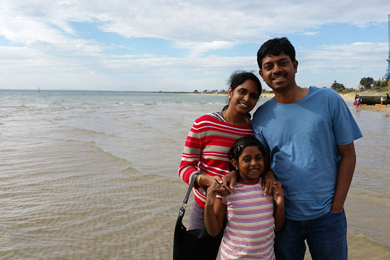

If you’ve spent any time in the Genesis community in the last couple of years, there’s probably one name you’ll see more often than most: Sridhar Katakam.
Also known as @srikat on Twitter, Sridhar has been a one man code tutorial posting, support forum helping, social media whirlwind since he first started posting Genesis tutorials on his website back in July 2013.
Sharing tutorials on an almost daily basis, he quickly established authority and credibility in the community with the breadth and depth of what he was sharing.
Then, in February 2015, he decided to create a paid membership site out of those tutorials. Less than three months later, he shared the good news on Twitter that things were going so well he was no longer looking for forum/help desk support jobs.
With his genuine love of helping people clearly apparent, it’s difficult not to root for this self taught coder now helping hundreds of¬†other people get better at coding every month.
That’s why I couldn’t be happier that he agreed to¬†tell me more about¬†how he got into Genesis (including hating it at first!), the success of his membership site and his plans for the future.
I hope you enjoy it.
I think a lot of people reading this will know who you are(!), but for those that maybe don’t, can you tell people a little bit about yourself, where you live, what you do and what you do for fun (outside of playing with code :)?
First of all, thank you Nick for giving me an opportunity to voice my opinions and thoughts.
After my Bachelor’s in Industrial Production Engineering in India, I studied Master’s in Mechanical Engineering at USF, Tampa. I used to work as a helper in university bookstore and as a Teaching Assistant in Dynamics of Machinery lab during that time.
We had to build a HTML page to show the results in Heat Transfer class and I learnt HTML from HTMLGoodies site and CSS from BrainJar. After that I started researching on various CMSs and scripts like PHPNuke, PostNuke, Drupal, Mambo, Typo 3, Menalto Gallery, Movable Type, WordPress out of interest.
Trying out various CMS at opensourcemcms.com was my hobby. I started taking up projects in freelancing websites like RentACoder and GetAFreelancer. Eventually dropped out of Master’s as I had no interest whatsoever in doing the Thesis and moved back to India.
In India I worked as a recruiter during nights for a couple of months, then as a webmaster at SumTotal, then as a UI Designer at SAP Labs India, then as a support moderator at iThemes taking care of Builder theme support and finally switched to Genesis.
I am 37 and currently live in Melbourne, Australia with my wife and a 7 year old daughter.
I do PSD to WP conversions, primarily for the DMA, take up Genesis customizations via GenesisCustomizations.com and write tutorials on Genesis and WordPress at sridharkatakam.com.
During my free time which is usually, during lunch and dinner, I watch movies (mostly Indian). I follow the happenings in mobile industry (Apple, Android etc.). I also like playing table tennis and chess.
For me, and probably a lot of people, you’re most well known for the sheer volume and quality of great code tutorials that you share. Using them as the foundation you launched a paid membership site in February 2015, for those that don’t know about the project can you tell people a little bit more about that?
Like with two or three of my earlier sites, sridharkatakam.com also started as a place where I document and share my findings and code experiments with the rest of the world.
I do not have a formal coding knowledge or background and hence every time I figure out something new I have this irresistible urge to share it with others who might tread that path and save themselves a lot of time and frustration.
One of the main reasons I converted my site into a membership site is to reduce the amount of requests for coding help in the comments. I did not like the idea of turning comments off or ignoring the people that were asking for help. There are only so many hours in a day to help everyone. Introducing a small amount of monthly fee to access my tutorials, I felt, is a good way to let only those in that are genuinely interested.
I think my site’s target audience is primarily web designers and developers that build websites for others.
After launching the membership site I think the reaction from pretty much everybody has been incredible (and deservedly so). I don’t want to focus on it too much but, as it’s kind of part of the journey of where you got to today, how did you feel when you got that one (ridiculous) initial bit of negative feedback on Twitter when you first suggested the idea? And then later so many people came out to support you (including Brian Gardner, Lauren Mancke and Carrie Dils on Genesis Office Hours), that must’ve helped?
Frankly I did not understand why that guy had a problem with me removing free access to the content I wrote in my site. It’s not like I am forcing anybody to join. As a matter of fact, I do not even have an ‘About’ Page or a formal launch/announcement post in my site or social media. All the 600+ members that have joined did because they knew the value of what I write and via word of mouth.
I did not feel discouraged by that incident though. There are better things to worry about in this world. Yes, the support offered by Genesis community has been tremendous!
You recently came out and shared the fantastic news you’re no longer taking on support work due to the membership site’s success with over $6,000 of revenue in April. That must feel incredible. Now you’ve got in this position do you have further goals (financial or otherwise) for the site?
When I wrote I am no longer looking for support jobs, I meant I am not going to actively seek work in the role of a support person in WordPress companies like Automattic. I still undertake Genesis customizations work if my time permits.
I do not have a monetary goal for my site. I only strive to publish at least 1 useful tutorial every day. Looking into the future, if the revenue grows to a consistent $10,000 a month I may stop taking up client work + theme customizations work and concentrate fully on the membership by adding step-by-step videos, more content, learning paths etc.
You’re clearly providing a lot of value to people with what you share, Brian Gardner called it out as a clear “return on investment” and I think that’s very true. Given the value that people are clearly getting out of your site, do you have any plans to raise the price for new members in future? What are you thoughts on pricing in general?
I help people in StudioPress forums, over Twitter, in Facebook and Google+ Genesis groups and in Slack because I genuinely want to and like it. I have never planned or worked towards converting the site into a membership site. I do not consider my website as a business and my help to others via tutorials, an investment. It just happened to go in that direction.
Regarding plans for increasing the price, not in the near future.
I always want my writing to be helpful to as many people as possible. No amount of money will give me as much satisfaction and make me as much happier than to know that one of my tutorials has helped someone while I am asleep.
1000 users paying $10 each or 200 paying $50 each would get me the same net amount. But I will be helping 800 people more by keeping the price $10 per month. Support will not be a problem because this is the price for only accessing the tutorials.
The first day I added the membership, I set the price to $47 a month which is what I thought as a fair price for what I offer. Maybe after six¬†months, I may raise the price from the current $10 a month to $27 and then eventually to $47 after a¬†couple of years. We will see… Basic membership¬†will remain the same $10 for those who subscribed at that price.
When you were coming up with idea for the membership site were you inspired by any other businesses in particular, either inside or outside of WordPress?
No. I am not a paying member of any membership site at the moment.
The hardest part of a membership site is the content and I had lots of it – content that is useful, clear and practical. All I had to do was install a plugin and configure it.
For those reading this that might be thinking of launching their own Genesis or WordPress focussed business, what advice would you give them?
As someone said, passion without profit is a hobby. So congratulate yourself now that you have decided to monetize your expertise. Genuinely help others by offering value and rest falls in place automatically.
There is a huge market for services and training businesses specializing in Genesis. Go for it.
For the techies amongst us, what plugins / solutions are you using to deliver your membership site and forums at the moment? Any plans to change solutions? Anything you wished you’d done differently in hindsight?
I started with Paid Memberships Pro but after realizing how limited it is (features and documentation wise), switched to the more powerful MemberPress.
Many of the features that MemberPress has out of the box (like members belonging to multiple products/levels) are yet to be implemented in PMP.
For the forums, am using bbPress. I am quite happy with the way these are working at the moment.
Adding PayPal Premier account with Digital Goods support gave me the hardest time and caused me a loss of at least $5000 due to PayPal’s inability to fix a problem with recurring payments on their end.
After a frustrating wait of 1.5 months or so, I switched to the simpler and more importantly, working PayPal Standard.
Moving back to Genesis, you’ve been posting code tutorials for it since 2013. What was the initial appeal of working with Genesis and what is the appeal today?
At first I hated it. See http://pixelyzed.com/2013/05/16/the-state-of-my-2013-wordpress-toolset-themes/#comment-5049.
In July 2013 when Catalyst (earlier Frugal) became Dynamik and embraced Genesis, I tried Genesis again via Dynamik and thought it was ok.
This period also happened to be the time when I parted ways with iThemes and I was looking to move away from Builder.
By August I was actively going through StudioPress forums, trying to re-create the user’s issues and come up with answers. My first tutorial on Genesis was in August 2013. Seeing close to 60 comments for it encouraged me and after that there was no turning back.
The biggest appeal today to me, is the clean HTML output that Genesis produces. Thanks to actions and filters, we can create a custom WordPress website in Genesis with minimal amount of code changes – easily and quickly.
Genesis probably does not appear easy or intuitive at first, but if one sticks to it, there is a tremendous potential in it.
Is it perfect? No. Please ask Gary Jones for further details on that üòâ
You’ve clearly know a lot about Genesis and web development in general, but when you’re stuck with something who do you typically reach out to for help?
Google, Slack, Twitter, StackExchange, Forums – in that order.
What’s the best way for people to follow what you’re doing if they want to learn more?
I am all over the internet in Genesis communities on Twitter, Facebook, Google+, Slack and Skype. I am most active on Slack though.
The best way for people to get notified about new tutorials I publish is by subscribing using the form in my site’s sidebar.
Finally, the most important question of all: Game of Thrones or Downton Abbey?
What are those? I am guessing TV shows?
If you’re in the Genesis community and thinking of starting a new business (or side project), I hope that Sridhar’s story inspires you.
I also just want to take a moment to thank Sridhar for taking the time and being very generous with his answers and in sharing his story.
If you have any questions or comments about the interview please feel free to leave a comment below (and¬†I’ll try to pester him to come and answer any questions) or get in touch with him on Twitter @srikat.
Or better yet, if you haven’t already, join his membership site (before he puts the price up!).¬†If you’re working regularly with Genesis, I am sure you’ll find it a tonne of value.
PS If you’d like to read more interviews with some of the most awesome people in Genesis just subscribe below and get all the awesomeness straight in your inbox¬†twice a week.
Sridhar, is a coding hero. I have followed him for a long time. He has even helped me a few times for free. Once he switched to a paid membership site. I never blinded twice about the $10.00 a month. A+ in my book.
-Scot
Thanks Scot, big fan here of his here too!
Great post Nick! I´m just waiting for a Genesis office hours with Sridhar.
Thanks Danne!
He did one a while back along with Nathan Rice:
http://officehours.fm/podcast/23-2/
Great insights Sri.
Your future plans for the membership site looks promising. Best wishes.
Rightly said, lot of business opportunities with regard to Genesis learning and training.
Sridhar is a hero, thanks for the article Nick.
Very interesting for me because I am setting up a membership site for a client right now, so it’s great to have some insight on what Sridhar did for his own site. However, Sridhar says that PaidMembershipPro does not offer membership levels out of the box, but it looks to me as if it does:
http://www.paidmembershipspro.com/features/unlimited-membership-levels/
Maybe he means something else?
http://www.paidmembershipspro.com/2015/02/multiple-membership-levels-per-user-pmpro-workarounds/ is what I referred to. Workarounds are just that, workarounds – not a proper solution.